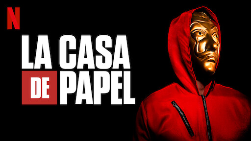

Um grupo de assaltantes invade a Casa da Moeda da Espanha. Ele quer fazer o roubo perfeito e espera sair de lá com 2,4 bilhões de euros. Mas no meio do caminho, os bandidos precisam fazem reféns e do lado de fora, o prédio está cercado pela polícia. Será o maior roubo da história, ou uma missão em vão?
Um misterioso homem que atende pela alcunha de "Professor" planeja o maior assalto a bancos da história. Para colocar seu plano em prática, ele monta uma equipe de oito habilidosos ladrões que terão de invadir a Casa da Moeda de Madri e roubar 2 bilhões de euros. O assalto acontece logo no primeiro episódio. Com macacões vermelhos e máscaras caricatas do Salvador Dalí, o grupo invade a Casa da Moeda e faz 67 pessoas como reféns. Entre funcionários e um grupo de adolescentes em excursão, três pessoas se destacam: Alison Parker, que é filha do embaixador do Reino Unido; Arturo Román, que é o diretor da Casa da Moeda; e Mônica Gaztambide, secretária e amante de Arturo, que acaba de descobrir que está grávida dele.
Essa temporada começa mostrando o Professor perdendo o controle porque a polícia encontrou a casa de Toledo -local onde ficaram por meses estudando e planejando o roubo- e casa está cheia de provas e evidências. Seria uma pena se não fosse tudo montado pelo próprio Professor pra fazer a polícia perder tempo correndo em volta do próprio rabo.Em meio à tanto tiro, porrada e bomba, eles colocam a Tókio para fora –uma decisão de Berlim como castigo por ela ter ficado aloprando todo mundo para não dar continuidade ao plano e fugirem carregando o dinheiro que já tinham em mãos.Do lado de fora a polícia acredita estar em vantagem, investigando a casa cheia de provas plantadas e Tókio sendo interrogada por Raquel, que tenta conquistar sua confiança a todo custo mas sem sucesso. (SERIA UMA PENA SE o Professor também já não tivesse arquitetado tudo isso antes). A assaltante é então transportada para um presídio de segurança máxima mas o veículo acaba sendo interceptado por Sérvios. Com o Professor rendido por Raquel, o plano para voltar com Tókio para a Casa da Moeda dá errado e ela precisa improvisar.Uma pena que para isso, ao abrirem as portas da casa da moeda, um confronto é armado entre os assaltantes e a polícia, para que dê tempo de Tókio entrar com a moto. Então, um deles é acertado: Moscou. (UMAS DAS CENAS MAIS ICONICAS)
O clima fica mais tenso ainda. Alguns dias antes, Helsinki deu fim a vida de Oslo que continuava em estado vegetativo. Já estavam com um parceiro a menos, e Moscou estava agora lutando pela sua vida. O grupo está quase desfalcado com 2 membros. Ele está gravemente ferido e os assaltantes precisam correr para salvá-lo.Professor consegue virar o jogo contra Raquel e acaba por imobilizá-la para que ele tenha chance de se explicar. Ele expõe alguns pontos de seu plano mas afirma que realmente se apaixonou por ela. A inspetora (obviamente) não acredita em suas palavras mas o mesmo já não tem mais tempo para ficar ali. Salva sai do local, deixando Raquel para trás sem ter feito nada para impedi-lo. É justamente nessa hora que a inspetora fica em maus lençóis, tendo em consequência disso, um afastamento do caso.Já afastada do caso, Raquel luta sozinha para reconquistar sua profissão e seu cargo, e investiga por conta própria onde poderia estar localizado o local onde Salva mantém todos os seus equipamentos para monitorar os acontecimentos. Com um pouco de estudo de ocorrências anteriores, a inspetora consegue descobrir o esconderijo de Professor. Porém, ao tentar rendê-lo, ela percebe que o mesmo não está sozinho. Ela ainda tenta lutar mas é desarmada no fim das contas. a polícia invade a Casa da Moeda, com seus reféns já a salvo, se aproximando cada vez mais dos bandidos. Berlim é quem fica por último para garantir que todos consigam levar toda a fortuna para o outro lado e que consigam tempo o suficiente para escaparem pelo túnel. Berlim é baleado diversas vezes enquanto dá cobertura a seus amigos. A polícia consegue extrair de Raquel, o endereço de onde está Sergio Marquina, e todo o batalhão segue para lá .Rio, Tókio, Nairóbi, Denver, Helsinki e Mônica finalmente conseguem chegar no destino final do túnel, trocando todas suas vestimentas e saindo pelas ruas disfarçados, e assim acaba a segunda temporada.
Depois do maior assalto da história na Casa da Moeda da Espanha, o grupo de assaltantes estão de volta desta vez com um plano muito maior!Isso tudo porque Rio e Tokio cometem um deslize grave: despertar a atenção da Polícia.O primeiro episódio mostra a vida de cada um dos assaltantes pós roubo, curtindo suas vidas com o dinheiro roubado nas últimas duas temporadas. O grupo se dividiu em duplas, ficando Helsinki+Nairobi, Denver+Mônica, Rio+Tókio e Professor+Raquel Murillo. Cada dupla ficou em um país e continente distinto e o primeiro episódio mostra Tokio e Rio nas ilhas caribenhas, curtindo muito a vida de casal. Mas depois de dois anos, Tokio decide que precisa ver gente e bagunça e acaba deixando Rio na ilha. Numa tentativa burra apaixonada, Rio entrega a Tókio um telefone via satélite para que se falem quando estiverem com saudades. Três dias se passam e Rio liga para ela, mas a Interpol intercepta a ligação descobrindo a localização dos dois assaltantes. Rio por estar isolado numa ilha, não consegue fugir, mas Tókio consegue enganar a polícia e correr de imediato para procurar ProfessorEm uma conversa entre ela, Professor e Raquel, eles entendem que não foi noticiada a prisão de Rio pela Interpol, e que então, por isso, estavam torturando-o e mantendo-o em algum local escondido para que tivessem tempo de fazer o que quisessem para torturá-lo e conseguir mais informações dos outros assaltantes. Sendo assim, Professor convoca todos os membros do grupo e explica: “vamos salvar Rio”. Como?? “Roubando. É o que sabemos fazer.“.E assim comeca o outro assalto.Nisso o Professor usa um telao para anunciar o novo assalto.Em um dado momento, Professor explica em como desta vez será muito diferente, porque uma vez que entram no cofre, o compartimento é inundado, deixando todos em situação de risco de afogamento.A jogada de mestre para entrarem no banco sem serem notados, se dá em instaurar o pânico e caos na polícia, que fica tão apavorada que coloca o exército em peso e de prontidão em todos os bancos e instituições financeiras da cidade. Quando isso acontece, Sérgio e Raquel já estão com rádios e telefones da polícia grampeados e descobrem que o batalhão que seguirá para o banco alvo e reforçar a segurança, será o BRIPAC. Então rapidamente, o grupo já se encontra com seus comboios, todos fardados e imitando o sexto batalhão batalhão das BRIPAC. Com isso, eles seguem até o Banco Nacional e conseguem utilizar inclusive da força tarefa da guarda civil, para adentrar no local. Uma vez dentro do banco (disfarçados de militares), o grupo comemora o primeiro sucesso do plano.Tokio e Nairóbi precisam pegar um cartão de acesso (que é uma das peças-chave para o plano funcionar) com um governador do banco. As coisas saem um pouco do controle, mas Palermo ajuda as duas em situação de risco. Eles conseguem o cartão de acesso, mas em um confronto com um dos guardas do governador, estilhaços acertam os olhos de Palermo, prejudicando a visão do mesmo. Todos voltam aos reféns no salão central e Nairóbi escolhe 4 falsos reféns para ajudar numa tarefa.Depois que todos são escolhidos, vão em direção ao elevador e lá é revelado que são todos soldadores do mesmo grupo e estão lá para ajudarem a passar pelo cofre que inunda. A idéia é: não abrir a porta e sim, um buraco através dela. Com este buraco, eles colocam uma câmara que a atravessa, tornando possível a passagem de um deles de um lado ao outro, (com tanques de oxigênio) para fazerem o transporte das barras de ouro.Mas no meio de tudo isso Nairobi acaba morrendo com um tiro vindo da janela.
Já faz mais de 100 horas que a missão no Banco de Espanha começou. O grupo de assaltantes conseguiu resgatar Lisboa, mas não há motivos para comemorar — muito pelo contrário: o momento é de tensão e luto. O Professor foi capturado por Sierra e, pela primeira vez em sua vida, ele não tem um plano de fuga. E quando parecia que a situação não tinha como piorar, aparece um inimigo muito mais poderoso do que qualquer outro que já enfrentaram: o exército. O maior roubo da história está chegando ao fim — e aquilo que começou como um assalto está prestes a se transformar em guerra.
Uma das piores partes dessa temporada é que uma das personagens principais morre, SIM A TOQUIO MORRE.Se sacrificou para salvar a vida dos seus amigos.
Depois de muitas histórias,eles consguem tirar o ouro mas enquanto se preparavam para fugir com o ouro, os ladrões foram surpreendidos por falsos policiais que, na verdade, eram Rafael e Tatiana, filho e ex-esposa de Berlim, que o traíram para ficar juntos. O casal enterrou todo o ouro encontrado embaixo de uma casinha em uma região afastada.Porém no fim eles descobrem onde o ouro está, Sierra ficou responsavel por essa parte.E enquanto no banco o policiais conseguem entrar no banco, e nisso eles fazem um acordo com os assaltantes,"matando" os assaltantes para o publico. No fim do ultimo episodio eles aparecem VIVOS, umas das partes mais emocionantes sao eles saindo no aviao.